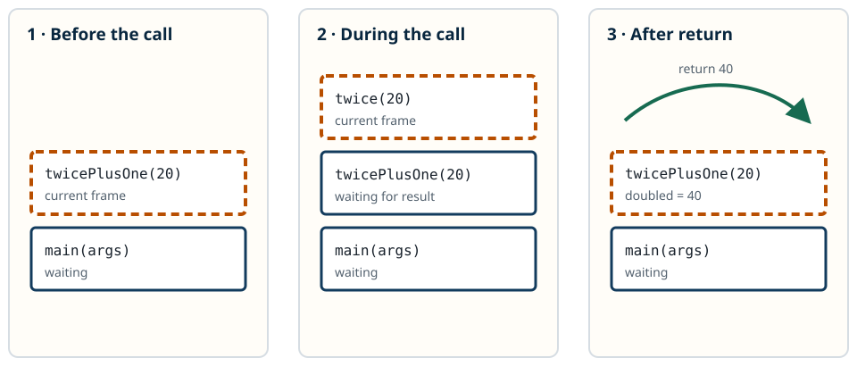

How a Java Program Runs
A call-stack model for explaining method calls, recursion, exceptions, and shared mutable state.
By the end of this chapter
- Draw the active frames for a short Java call chain.
- Trace normal returns and exception propagation.
- Use a stack trace as evidence, not a wall of blame.
- Explain why a local reference can still reach shared mutable state.
12.1A Small Mystery
This method is too small to look mysterious:
static int middle(int[] values) {
return values[values.length / 2];
}Then it fails.
Perhaps values is null. Perhaps it is empty. The exception points at middle, but the bad array may have travelled through five other methods before arriving there. The failed line is only the end of the story.
To work backward, we need a picture of the computation that led to that line. We need to know which methods remain active, what each invocation remembers, and where execution goes when a method returns or throws. That picture is the call stack.
12.2The Call Stack
Suppose main calls load, which calls parse. While parse runs, load waits to resume, and main waits beneath it. The JVM remembers enough about every active invocation to continue it later.
Each invocation contributes a frame. The newest frame sits on top because it is currently running. Calling a method adds a frame. Returning removes it and uncovers the caller.

twice adds a frame. Its return removes that frame and transfers 40 to twicePlusOne. Labels and line style identify the active frame without relying on colour.12.3Watch the Frames Come and Go
This complete program gives us a call chain we can compile, run, and draw:
public final class FrameDemo {
public static void main(String[] args) {
int answer = twicePlusOne(20);
System.out.println(answer);
}
static int twicePlusOne(int value) {
int doubled = twice(value);
return doubled + 1;
}
static int twice(int value) {
return value * 2;
}
}twice returns 40, so its frame leaves the top. twicePlusOne resumes, stores 40 in doubled, and returns 41. Finally, main resumes and prints the answer.
Design Note: Private Frames, Shared Objects
Frames separate invocations, but they do not automatically separate objects. Two frames can hold references to the same mutable object. Ask who can reach that object and who can observe a mutation.
This distinction connects the call stack to representation exposure and, later, to thread safety.